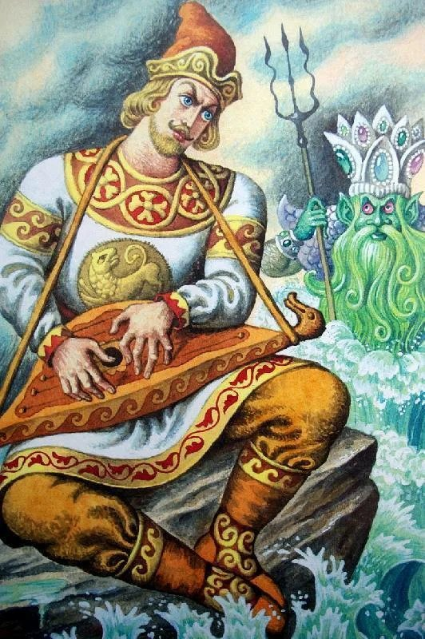
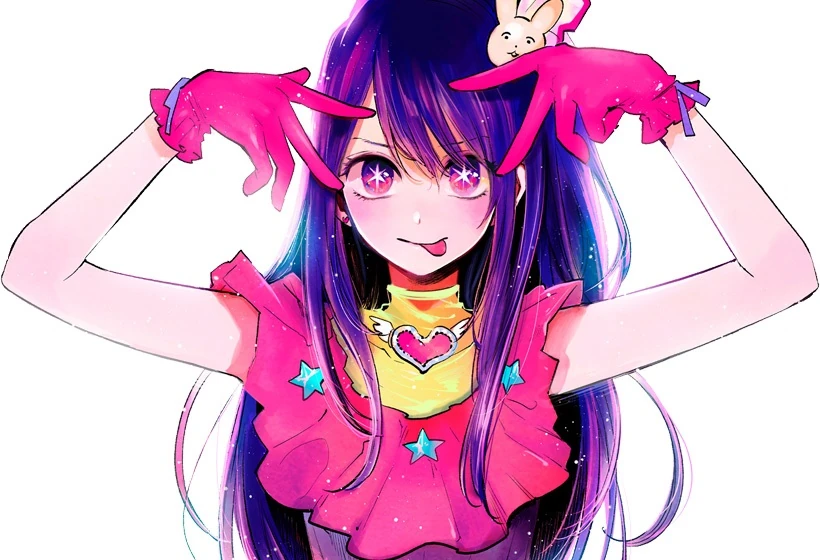
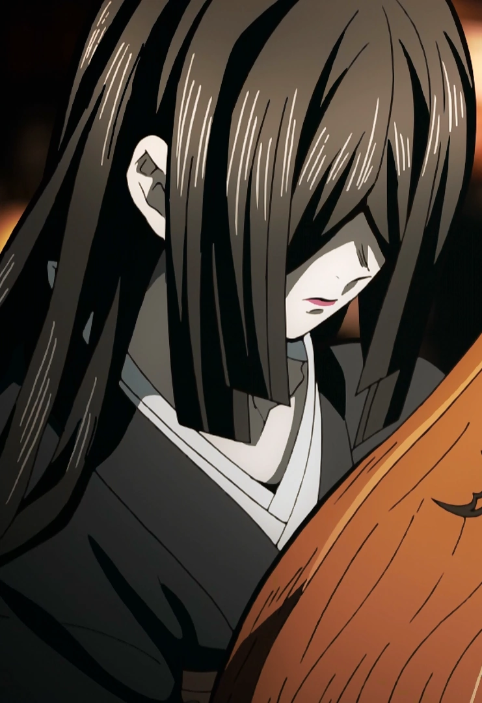
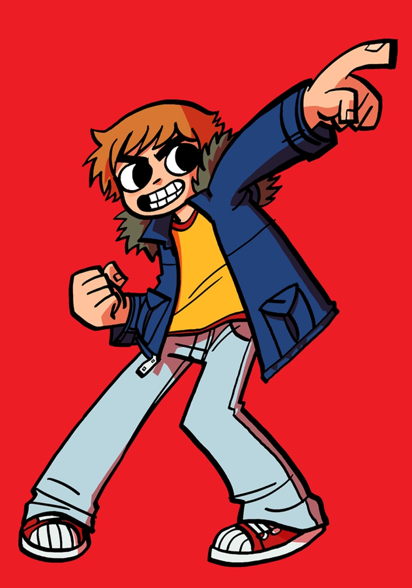
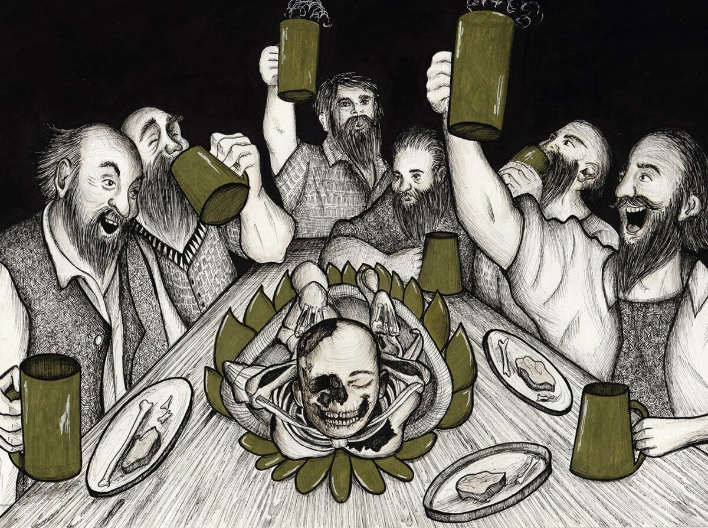
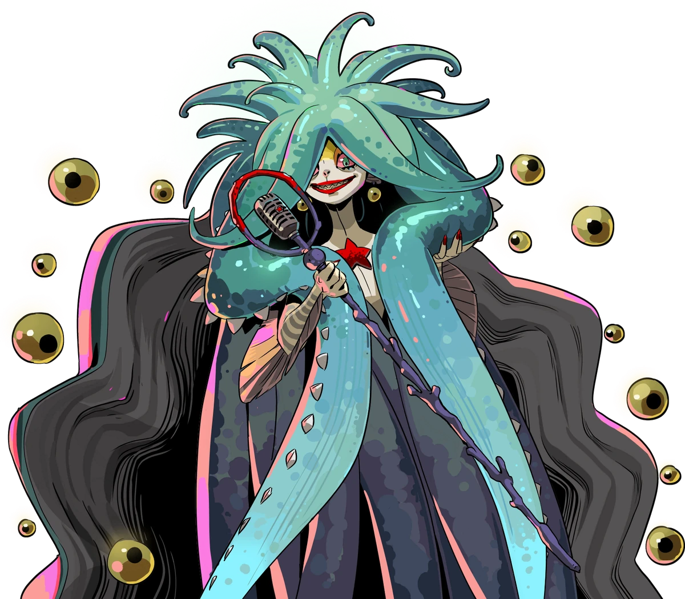
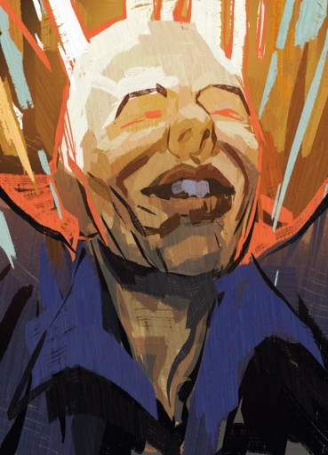
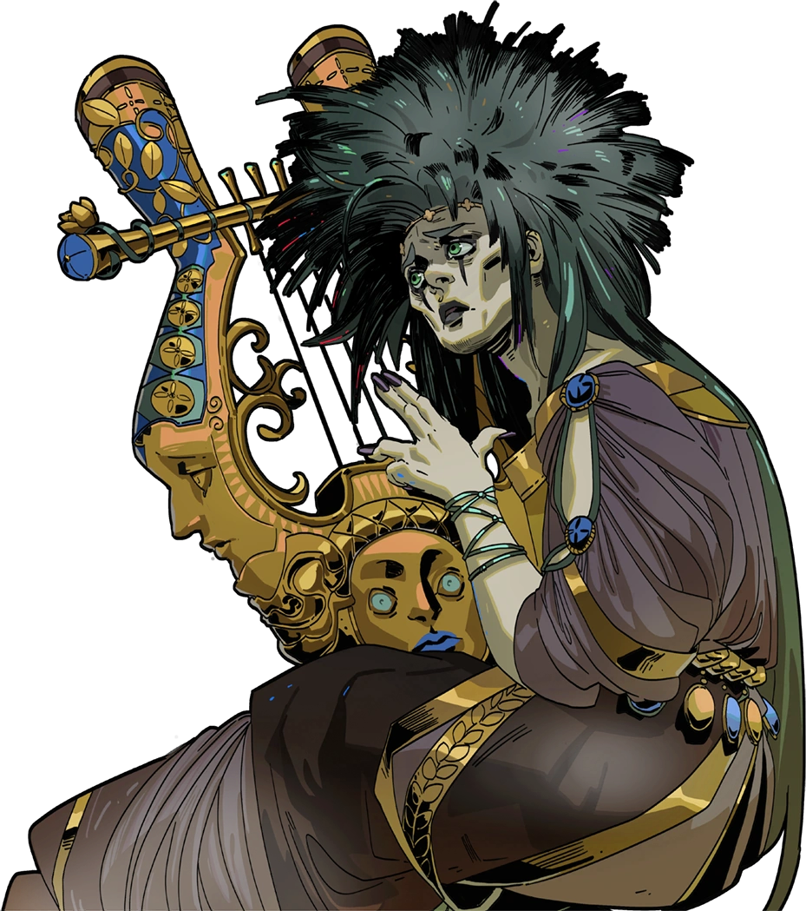
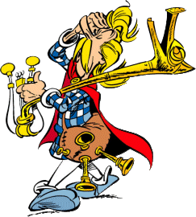
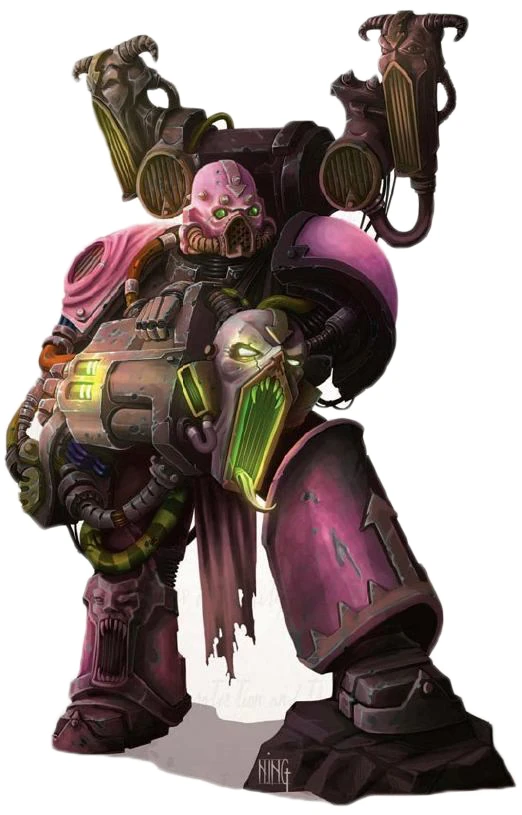

Table of Contents
- Персонажи
- Мафия – Mr Fiks – Гусли Садко из “Садко”
- Мафия – Nekr0 – Ай Хосино из “Oshi no Ko”
- Предатель – VanSLis – Накимэ из “Kimetsu no Yaiba”
- Якудза – Destiny – Скотт Пилгрим из Scott Pilgrim vs The World
- Якудза – Siiiiid1 – Финеас из “Финеас и Ферб”
- Якудза – Ingeroid – Жена конюха из “Ели мясо мужики”
- Закон – Джакка – Сцилла из “Hades”
- Закон – Shy – Хацунэ Мику из “Vocaloid”
- Закон – ISOLE – Ферб из “Финеас из Ферб”
- Закон – Nikita101889 – Трубадур из “Бременских музыкантов”
- Закон – Cvi_ – Germaine van der Wijk из “Disco Elysium”
- Закон – Cornix – Орфей из “Hades”
- Закон – Psychotic – Какофоникс из “Asterix”
- Закон – vizion – Noise Marine из “Warhammer 40000”
- Нейтрал – Alaron – Джонни Сильверхэнд из “Cyberpunk 2077”
- Ход игры
- Итоги
Персонажи
Мафия – Mr Fiks – Гусли Садко из “Садко”

Пустить в пляс (Контроль) – ночью выберите цель и назовите любые два цвета. Заведомо, если цель в следующую ночь играет способности любого из этих цветов, то блокируется. Нельзя повторять названные цвета при повторных применениях на одну и ту же цель. Эту способность нельзя заблокировать.
Морской царь (Агрессия) – если в две прошлые ночи вы использовали Пустить в пляс на одну и ту же цель, в эту можете вызвать потоп. Тогда все атаки в эту ночь игнорируют одну защиту или блокировку. Можете выбрать цель, кроме персонажа, о котором идет речь, тогда Аккорд (Агрессия, Агрессия, Агрессия) – также атакуйте цель.
Игра на пиру (Хаос) – ночью, вдобавок к другим способностям, можете выбрать любые цвета (минимум 1). Эта способность имеет именно выбранные цвета с точки зрения Аккорда, Соло и Серенады. Можно применять один раз за игру. Перезаряжается, если умирает член Мафии.
Биться от заклад (Информация) – днем можете выбрать цель и приказать ей в следующую ночь применить способность на выбранного вами персонажа. Если цель не выполнила приказ, вы узнаете об этом, и на следующую ночь ваше Убийство в ее сторону игнорирует защиту и блокировки. Цель узнает суть приказа, но не последствия за невыполнение. Нельзя применить дважды на одну и ту же цель.
Мафия – Nekr0 – Ай Хосино из “Oshi no Ko”

Фандом (Информация) – каждую фазу можете создать или пересоздать чат Фандома с вами и любыми 3-6 персонажами. Ваша личина с точки зрения способностей членов Фандома – Закон. Атаки от членов Фандома в вашу сторону игнорируют защиты и не могут быть заблокированы.
Любовь? (Информация) – ночью можете выбрать цель. Если личина цели – Предатель, вы узнаете об этом. Нельзя применять на одну цель две ночи подряд. Серенада (Информация) – цель игнорирует одну атаку по себе.
Любовь! (Контроль) – ночью можете выбрать цель из Фандома. Ее способность Серенады в вашу сторону срабатывает вне зависимости от ее цвета. Серенада (Агрессия) – атакуйте цель.
В свете софитов (Контроль) – один раз за игру днем в любой момент можете публично и однозначно объявить, что применяете способность и являетесь Мафией. Мастер подтвердит справедливость утверждения. В этот день голосования за казнь заведомо не происходит.
STAR☆T☆RAIN (Агрессия) – ночью можете выбрать цель. Соло – атакуйте ее. Нельзя применять дважды на одну и ту же цель; перезаряжается, если умирает член Мафии.
Предатель – VanSLis – Накимэ из “Kimetsu no Yaiba”

Замок бесконечности (Защита, пассивно) – способности, которые вы применяете на персонажей, состоящих с вами в одном чате, не могут быть заблокированы. Вы защищены от атак персонажей, состоящих с вами в одном чате.
Портал (Информация) – ночью можете выбрать цель. Добавьте себя во все чаты, в которых состоит цель, кроме чата Кейкаку. Если вы добавились таким образом в чат Заговора, его члены узнают, что вы Предатель, и чат не пересоздается.
Глаза-миньоны (Информация) – ночью можете выбрать цель и узнать ее Личину. Аккорд (Защита, Защита, Агрессия) – узнайте, способности какого цвета и на кого применяла цель. Серенада (Контроль) – атакуйте цель. Серенада (Информация) – заблокируйте цель. Нельзя применять на одну цель дважды.
Раздавить стенами (Агрессия) – ночью, вдобавок к другим способностям, если оба ваших партнера по Мафии мертвы, атакуйте персонажа, с которым состоите в одном чате.
Якудза – Destiny – Скотт Пилгрим из Scott Pilgrim vs The World

Battle of the Bands (Агрессия) – днем можете выбрать цель. Цель узнает, что ее “вызвали на дуэль”. Нельзя использовать повторно, пока не перезарядится или цель не умрет. Можете также прислать цели произвольное сообщение.
Очная ставка (Агрессия) – ночью выберите из следуюших движений четыре; целью этой способности считается последний вызванный на дуэль. Узнайте, какие из них сработали. Если сработали хотя бы два, атакуйте цель, и Battle of the Bands перезаряжается. Если сработали хотя бы три, заблокируйте цель. Если сработали все четыре, цель нельзя защитить и эту способность нельзя заблокировать.
- Серенада (Агрессия)
- Серенада (Защита)
- Серенада (Информация)
- Серенада (Контроль)
- Аккорд (Информация, Информация, Информация, Информация)
- Аккорд (Защита, Защита, Защита, Защита)
- Аккорд (Агрессия, Агрессия, Агрессия, Агрессия)
- Аккорд (Контроль, Контроль, Контроль, Контроль)
- Аккорд (Агрессия, Информация, Контроль, Защита)
- Аккорд (Контроль, Контроль, Защита, Защита)
- Аккорд (Агрессия, Хаос)
- Соло
- Цель заблокирована в эту ночь кем-то, кроме вас
- Личина цели – Мафия
1-up (Защита, пассивно) – один раз за игру, если по итогам ночи вы умираете, вы вместо этого заведомо выживаете.
vs. The World (Хаос) – если Battle of the Bands перезарядился хотя бы семь раз, ночью вдобавок к любой другой способности можете атаковать цель, игнорируя защиты.
Якудза – Siiiiid1 – Финеас из “Финеас и Ферб”
Финеас из "Финеас и Ферб"
Большая Идея (Хаос) – днем выберите любое количество любых цветов способностей, кроме Хаоса, как минимум два. Следующей ночью можете применить способность номером не больше, чем количество выбранных цветов. Способность срабатывает, только если срабатывает Аккорд на выбранные цвета. Нельзя применять одну и ту же способность две ночи подряд.
2: Гигантское бомбоубежище (Защита) – защитите всех членов Якудзы от одной атаки в эту ночь.
3: Переусложненный план мести (Агрессия) – если вы единственная живая Якудза, атакуйте цель.
4: Тайное общество (Информация) – создайте чат-комнату с любыми персонажами и названием по желанию, или уничтожьте любую ранее так созданную.
5: Внеочередной выходной (Контроль) – заблокируйте две цели.
6: Конкурс схваток на катанах (Агрессия) – атакуйте цель.
7: Ассассин из даркнета (Агрессия) – заблокируйте и атакуйте цель.
8: Теракт (Агрессия) – атакуйте две цели. Серенада (Защита) – также заблокируйте.
Якудза – Ingeroid – Жена конюха из “Ели мясо мужики”

С бабою встречались (Контроль) – ночью можете выбрать до трех целей. Заблокируйте тех из них, кто применял способность на вас, узнайте их, вы больше не можете применять эту способность на них, и они узнают "Вас пометила Якудза".
Не уследил (Защита) – днем можете выбрать цель. В следующую ночь Серенада (Информация) – заблокируйте ее. Нельзя применять на одну и ту же цель дважды.
Они не понимали (Информация) – днем можете выбрать цель; тогда следующие сутки она не может писать в чат-комнаты. Она и члены чат-комнат, в которых она состоит, знают об этом. Нельзя применять дважды на одну цель.
Правда, вкусная она? (Агрессия, пассивно) – если вы умерли по итогам ночи и не были в нее заблокированы, то все, ранее показавшиеся на способности С бабою встречались, также умирают. Если наутро живых не осталось, выигрывает Якудза.
Закон – Джакка – Сцилла из “Hades”

Хор сирен (Информация) – днем, вдобавок к другим способностям, можете добавить до двух целей к себе в чат Хора или удалить из него. Нельзя добавлять членов в чат Хора, если там больше пяти членов.
Репетиция (Контроль) – ночью, но не две подряд, можете применить эту способность вдобавок к другим. Тогда способности членов Хора не влияют на Аккорд, Серенаду и Соло не-членов Хора, и наоборот.
Дирижер (Контроль) - днем можете применить одну из следующих способностей, влияющих на всех членов Хора. Нельзя применить одну и ту же способность два дня подряд. Не срабатывает, если в следующую ночь в чате Хора нет как минимум трех членов.
- Темп – в следующую ночь члены Хора заведомо могут применить дополнительную способность
- Ритм - в следующую ночь члены Хора не могут быть заблокированы
- Крещендо - в следующую ночь члены Хора заведомо могут применить дополнительную способность “Атака по площади (Агрессия) – если все члены Хора применили эту способность на одну и ту же цель, атакуйте ее”
- Диминуэндо – в следующую ночь члены Хора имеют “Аккорд (Информация, Агрессия, Контроль, Защита) - игнорируйте одну атаку по себе”
Ближняя атака (Агрессия) – один раз за игру ночью можете атаковать цель, не находящуюся в чате Хора.
Закрытая ракушка (Защита) – один раз за игру ночью можете защититься от одной атаки.
Микрофон (Информация) – ночью можете отправить произвольное сообщение цели. q
Закон – Shy – Хацунэ Мику из “Vocaloid”

Project DIVA (Хаос, пассивно) - каждый день вы должны выбрать количество нот, от 2 до 5.
- В следующую ночь вы должны сыграть ровно столько разных нот (x△○︎□→←↑↓), в определенном порядке.
- Каждая нота заведомо считается сыгранной вовремя или невовремя.
- Заблокированные ноты считаются сыгранными невовремя.
- В остальных случаях, у каждой ноты есть свои критерии "вовремя".
x (Агрессия) - выберите цель; если цель играет способность, кроме Убийства, на вас, атакуйте ее, и эта нота сыграна вовремя. Серенада (Информация) – защитите цель от одной атаки по себе.
○︎ (Защита) - выберите цель; защитите ее от одной атаки. Нельзя играть на одну цель две ночи подряд. Вовремя, если вы раньше не играли эту способность на эту цель. Соло - защитите цель от всех атак, и она не может быть заблокирована.
□ (Информация) - выберите цель и отправьте ей анонимное сообщение. Вовремя, если цель состоит хотя бы в одном чате. Аккорд (Информация, Информация, Контроль, Контроль, Защита) – узнайте личину цели.
△ (Контроль) - выберите цель и цвет. Нельзя применять на одну и ту же цель дважды. Серенада ([выбранный цвет]) – заблокируйте цель, и эта нота сыграна вовремя.
→ (Агрессия) - соседние с этой ноты имеют цвет Агрессии, вместо настоящего. Вовремя, если был активирован хотя бы один Аккорд, использующий цвет Агрессии.
← (Информация) - эта и соседние с этой ноты в эту ночь не учитываются для чужих Соло, Серенад и Аккордов. Вовремя, если это на самом деле повлияло на активацию чьего-то Соло, Серенады или Аккорда.
↑ (Защита) - эта и соседние с этой ноты не могут быть заблокированы. Вовремя, если кто-то пытался вас заблокировать.
↓ (Контроль) - соседние с этой ноты учитываются трижды с точки зрения чужих Аккордов. Вовремя, если из-за этого активировался чей-то Аккорд.
Комбо (Защита, пассивно) – если вы сыграли все ноты вовремя, в следующую ночь вы не можете быть заблокированы.
Счет (Хаос, пассивно) – по итогам каждой ночи вы узнаете, какой процент всех сыгранных вами нот был вовремя. В конце игры, если ваш счет меньше 60%, вы проигрываете, даже если Закон победил. Способность работает после смерти.
Исчезновение Хацунэ Мику (Хаос) - днем, не раньше третьего, можете умереть (сохранив счет).
Закон – ISOLE – Ферб из “Финеас из Ферб”
Большая Идея (Хаос) – днем выберите любое количество любых цветов способностей, кроме Хаоса, как минимум два. Следующей ночью можете применить способность номером не больше, чем количество выбранных цветов. Способность срабатывает, только если срабатывает Аккорд на выбранные цвета. Нельзя применять одну и ту же способность две ночи подряд.
2: Рекреация брони Галлов эпохи Цезаря (Защита) – защититесь от одной атаки по себе
3: Бомбоубежище на случай ядерной войны (Защита) – защитите цель от одной атаки
4: Частное детективное агентство (Информация) – узнайте личину цели
5: Лоббирование мэрии на предмет закрытого ношения (Агрессия) – атакуйте цель
6: Внеплановый отпуск на круизном лайнере (Контроль) – заблокируйте две цели
7: Досье на каждого жителя города (Информация) – узнайте личину цели и, если она не Закон, заблокируйте ее
8: Организация народного ополчения (Агрессия) – если личина цели не Закон, атакуйте цель
Закон – Nikita101889 – Трубадур из “Бременских музыкантов”

Хижина разбойников (Информация) – один раз за игру днем выберите чат Заговора или Кейкаку. Его члены узнают об этом и узнают текст этой способности. Следующим утром узнайте текст, но не отправителей, всех сообщений, отправленных в тот чат следующей ночью.
Переодеться в разбойника (Защита) – ночью, но не две подряд, выберите личину, кроме Закона. Ваша личина совпадает с выбранной, и вы защищены от всех атак персонажей с этой личиной.
Похищение (Контроль) – ночью, но не две подряд, можете заблокировать и защитить от всех атак одну цель. Аккорд (Контроль, Контроль, Контроль, Контроль) – также узнайте ее личину; если этот Аккорд не сработал, то вы узнаете “Мафия”.
Имитация драки (Агрессия) – ночью можете выбрать цель; атакуйте ее и защитите от одной атаки.
Песня о любви (Информация) – ночью, но не две подряд, можете выбрать цель. Серенада (Агрессия) – заблокируйте ее. Серенада (Контроль) – атакуйте ее. Серенада (Информация) – защитите ее от одной атаки. Серенада (Защита) – узнайте ее личину.
Закон – Cvi_ – Germaine van der Wijk из “Disco Elysium”

DJ (Хаос, пассивно) – применяя любую способность, сами решайте, какой у нее будет один цвет.
TURN UP THE VOLUME! (???) – один раз за игру днем, кроме первого, можете применить эту способность; тогда в следующую ночь всем заведомо можно общаться в публичной ветке и только там.
NOT LOUD ENOUGH! (???) – ночью, но не две подряд, можете атаковать всех, кто уже получил хотя бы одну атаку в эту ночь.
WE DANCE! (???) – ночью можете выбрать цель; ее Аккорды в эту ночь автоматически срабатывают. Нельзя применять дважды на одну цель.
I AM THE MIC ENFORCER! (???) – ночью можете выбрать цель. Серенада ([цвет этой способности]) – заблокируйте цель. Нельзя применять дважды на одну цель.
I AM THE REARRANGER! (???) – ночью можете выбрать две цели. Если они обе пытаются атаковать вас в эту ночь, то вместо этого они атакуют друг друга.
Закон – Cornix – Орфей из “Hades”

Придворный музыкант (Хаос, пассивно) – каждый день все игроки могут тайно проголосовать за цвет способности. В следующую ночь вы можете применять способности только этого цвета. В случае ничьей, но не если голосов не было совсем, можете применять способности любого цвета из набравших больше всего голосов. Голоса вскрываются публично в конце дня. В начале игры раскрывается текст этой способности, но не чья она.
Воспоминание о прошлом (Информация) – ночью можете выбрать цель; узнайте, способности каких цветов она играла в прошлую ночь. Серенада (Информация) – также узнайте, на кого.
Музыкальный слух (Информация) – ночью можете выбрать цель; узнайте, способности каких цветов она играет в эту ночь. Серенада (Информация) – также узнайте, на кого.
Очаровать музыкой (Контроль) – ночью можете выбрать цель. Аккорд (Агрессия, Агрессия, Агрессия) – заблокируйте цель. Аккорд (Контроль, Контроль, Контроль) – цель не может быть заблокирована в эту ночь. Нельзя применять на одну и ту же цель дважды.
Растопить сердце (Контроль) – ночью можете выбрать цель. Серенада (Агрессия) – заблокируйте цель, и в следующую ночь цель заведомо не может применять способности цвета Агрессии. Нельзя применять дважды на одну и ту же цель.
За любимой (Защита) – ночью можете выбрать цель. Если она должна умереть в эту ночь, то она живет еще сутки и умирает по итогам следующей ночи. Нельзя применять дважды на одну и ту же цель.
Следуй за мной (Защита) – ночью можете выбрать цель. Если кто-то другой защищает вас от атак в эту ночь, то защитите цель от всех атак. Нельзя применять дважды на одну и ту же цель.
Обернуться (Агрессия) – ночью атакуйте цель.
Закон – Psychotic – Какофоникс из “Asterix”

Сыграть на пиру (Контроль) – ночью можете выбрать чат-комнату, в которой находитесь. Заблокируйте всех остальных ее участников и покиньте комнату.
Контрвыступление (Контроль) – ночью можете выбрать цель. Если у нее должен сработать Аккорд в эту ночь, заблокируйте ее. Нельзя применять на одну и ту же цель дважды.
Плохой слух (Контроль) – ночью, вдобавок к любой другой способности, можете выбрать цель и цвет. Все сыгранные в эту ночь способности цели считаются выбранного цвета вместо настоящего. Узнайте случайную из не-законных личин, кроме той, которая есть у цели.
Непрошенный лейтмотив (Контроль) – ночью можете выбрать цель и цвет. С точки зрения Серенад считается, что цель сыграла этот и только этот цвет.
Запланировать концерт (Агрессия) – днем можете выбрать цель; все узнают вас, выбранную цель и текст этой способности. В следующую ночь, если вы живы и не заблокированы, атакуйте цель.
Закон – vizion – Noise Marine из “Warhammer 40000”

Силовая броня (Защита, пассивно) – игнорируйте первую атаку Мафии или Якудзы по себе за игру.
Sonic Blaster (Агрессия) – ночью выберите цель и цвет. Серенада ([выбранный цвет]) – атакуйте цель.
Blastmaster (Агрессия) – один раз за игру ночью, не раньше пятой, выберите цвет. Аккорд (Агрессия, Защита, Информация, Контроль) – атакуйте всех, кто сыграл способность этого цвета.
Warp Amplifier (Агрессия) – ночью выберите цель. Ее атаки не срабатывают. Соло – в следующую ночь ее атаки тоже не срабатывают. Нельзя применять дважды на одну и ту же цель.
Doom Siren (Агрессия) – ночью выберите цель. Если она атакует вас, игнорируйте все ее атаки и атакуйте ее в ответ. Нельзя применить дважды на одну и ту же цель.
Sonic Shrieker (Агрессия) – ночью выберите цель. Соло – атакуйте ее трижды.
Нейтрал – Alaron – Джонни Сильверхэнд из “Cyberpunk 2077”
План теракта (Информация) – днем выберите три цели и добавьте вместе с собой в чат Теракта. Все члены чата заведомо имеют способность “Цель теракта (Агрессия) – ночью вдобавок к любой другой способности можете выбрать цель. Эту способность нельзя заблокировать”. Нельзя применять, если чат Теракта уже существует.
Исполнение теракта (Агрессия, пассивно) – если все члены чата Теракта применили Цель теракта на одну и ту же цель, кроме вас, все члены Теракта атакуют цель, и чат Теракта уничтожается.
Отзыв теракта (Защита, пассивно) – если ночью никто не играет Цель теракта, чат Теракта уничтожается.
Провал теракта (Агрессия, пассивно) – если все члены чата Теракта применили Цель теракта на разные цели, все члены Теракта атакуют вас, и чат Теракта уничтожается.
Анархист (Контроль) – ночью можете выбрать цель. Если ее личина – Закон, узнайте об этом и заблокируйте ее. Нельзя применять дважды на одну и ту же цель. Можно применять, будучи мертвым, но не на цель Энграммы.
Энграмма (Защита, пассивно) – в следующую фазу после смерти вы должны выбрать цель; узнайте ее сторону, роль и все способности роли; личина этой цели становится Нейтрал; цвета всех сыгранных ей способностей считаются Хаосом. Если она выигрывает, пока жива, вы выигрываете вместо нее. Пока цель Энграммы жива, вы можете продолжать общаться публично или в чатах, в которых были в момент смерти.
Ход игры
День 1
| Игрок | Голос (Казнь) | Голос (Цвет) | Действие |
| Cvi_ | Мир | Информация | |
| Nekr0 | Cornix | Информация | Фандом: ISOLE, Psychotic, Mr Fiks, Cvi_, Shy, Джакка |
| Destiny | Cornix | Информация | |
| Mr Fiks | VanSLis | Информация | Биться об заклад – Cornix, VanSLis |
| Джакка | VanSLis | Информация | Хор сирен – Nekr0, Alaron; Дирижер – Темп |
| VanSLis | Защита | ||
| Psychotic | vision | Агрессия | |
| Ингероид | Не уследил – Destiny | ||
| Siiiiiid1 | Psychotic | Большая идея | |
| Shy | Агрессия | Project DIVA – 4 | |
| Nikita | |||
| ISOLE | Nikita | Защита | Большая идея |
| Alaron | Мир | Информация | План теракта – Mr Fiks, Cvi_, Ингероид |
| vision | Psychotic | Агрессия | |
| Cornix | Мир | Информация |
Традиционный первый день, где Котя хочет вешать, а остальные не хотят. Половина состава читают правила невнимательно; хорошо, что есть первый день, в который можно подразобраться.
Ночь 1
| Игрок | Действие | Цвет | Результат |
|---|---|---|---|
| Alaron | Анархист - Psychotic | Контроль | “Личина – Закон” |
| Psychotic заблокирована | |||
| Цель теракта – Ingeroid | Агрессия | теракт не успешен | |
| VanSLis | Глаза-миньоны – Mr Fiks | Информация | “Личина – Мафия” |
| Cronix | Музыкальный слух – VanSLis | Информация | “Информация на Фикса” |
| ISOLE | Частное детективное агентство – Cvi_ | Информация | “Аккорд не сработал” |
| Nikita | Песня о любви – Shy | Информация | Shy заблокирован |
| Shy | Агрессия | “Вы были заблокированы” | |
| Агрессия | Все ноты невовремя | ||
| Агрессия | Счет – 0% | ||
| Агрессия | |||
| Siiiiid1 | Тайное общество: | Информация | Аккорд не сработал |
| – Siiiiid1 | |||
| – ISOLE | |||
| – Mr Fiks | |||
| – Джакка | |||
| – Nekr0 | |||
| – vision | |||
| – Cvi_ | |||
| Ингероид | Контроль | Заблокирован Destiny | |
| Psychotic | Контроль | “Вы были заблокированы” | |
| Cvi_ | I AM THE MIC ENFORCER! (Хаос) – Пси | Хаос | мимо |
| Джакка | Микрофон – ISOLE | Информация | Сообщение ISOLE1 |
| Mr Fiks | Пустить в пляс – Shy, Информация, Защита | Контроль | |
| Destiny | Очная ставка | Агрессия | Блок Ингера |
| - Серенада (Контроль) | Да | ||
| - Аккорд (Информация, Информация, Информация, Информация) | Да | ||
| - Аккорд (Контроль, Контроль, Контроль, Контроль) | Да | ||
| - Соло | Нет | ||
| Nekr0 | Любовь? – Cvi_ | Информация | “Не мафия” |
| Фандом – Mr Fiks, Cvi_, Джакка, ISOLE, vision, Nikita | Информация |
Большие идеи Финеса и Ферба не сработали – оба сделали ставку на Защиту, но ее никто не играл – потому что в первую ночь никто и не может быть атакован! Было предположение, что раз маскировочные способности обычно окрашены в Защиту, то кто-то да сыграет маскировку, но, увы, именно активных маскировочных способностей, имеющих смысл для игры в первую ночь, не было.
Аларон заблокировал Пси и узнал, что она Закон. Ну, точнее, должен был узнать – здесь был мастерский косяк, и информация не доехала. Прости меня, Котя, да, я запорола тебе игру 🙇♀️. При том, если бы блока Пси не было, то это сильно изменило бы дальнейший курс игры – потому что это окрасило бы атаку Дестини в Защиту, и Аккорды Финеса и Ферба сработали бы! Этот один ход от Нейтрала затруднил игру Закону и Якудзе.
Лис первым же скаутом успешно попал по Мафии! К сожалению, связаться с ними он уже не успеет…
Никита блокирует Шая, а Фикс ограничивает ему палитру на следующую ночь. Шаю это сбивает все ноты, и составляет счет 0%, отчего он сразу сдается и считает, что ему не выиграть. Хотя на самом деле Мику находилась в почти идеальной для нее ситуации и могла бы запросто выйти в положительный счет и при этом сильно помочь закону, просто Шай не очень сообразил, как совладать с ее механиками. Я подбодрила, как могла…
Destiny догадалась, что раз в первую ночь смертей нет, она может атаковать своего соратника по Мафии, просто чтобы получить одну техническую победу из семи необходимых для “ульты”. Немного перестаралась – попала в три движения из четырех и заблокировала Ингера – но это ни на что в итоге не повлияло, потому что Ингер и так не попал своей способностью.
День 2
| Игрок | Голос (Казнь) | Голос (Цвет) | Действие |
| Cvi_ | Psychotic | Контроль | TURN UP THE VOLUME! |
| Nekr0 | Psychotic | Контроль | |
| Destiny | Psychotic | Защита | Battle of the Bands – VanSLis |
| Mr Fiks | Psychotic | Контроль | Биться об заклад – Джакка, Psychotic |
| Джакка | Psychotic | Контроль | Хор Сирен – ISOLE; Темп |
| VanSLis | Защита | ||
| Psychotic | Alaron | Агрессия | Запланировать концерт – Mr Fiks |
| Ингероид | Они не понимали – VanSLis | ||
| Siiiiiid1 | Psychotic | ||
| Shy | Project DIVA – 5 | ||
| Nikita | Shy | ||
| ISOLE | Psychotic | Контроль | |
| Alaron | Psychotic | Защита | |
| vision | Psychotic | Контроль | |
| Cornix | Psychotic | Информация |
| Игрок | Голос (Казнь) | Голос (Цвет) |
|---|---|---|
| Cvi_ | Psychotic | Контроль |
| Nekr0 | Psychotic | Контроль |
| Destiny | Psychotic | Защита |
| Mr Fiks | Psychotic | Контроль |
| Джакка | Psychotic | Контроль |
| VanSLis | Защита | |
| Psychotic | Alaron | Агрессия |
| Ингероид | ||
| Siiiiiid1 | Psychotic | |
| Shy | ||
| Nikita | Shy | |
| ISOLE | Psychotic | Контроль |
| Alaron | Psychotic | Защита |
| vision | Psychotic | Контроль |
Казнили Котю – из-за меня. Помимо косячной проверки Аларона, она еще и пропустила чат – потому что не заходит в Дискорд постоянно, а уведомление о том, что чат есть, пришло только туда. Она в этот день выдала немало базы, но ее, как всегда, никто не слушал. Ее повешение было более-менее неизбежно.
Cvi применил свою коммуникационную ульту – общение продолжилось следующей ночью.
Ночь 2
| Игрок | Действие | Цвет | Результат |
|---|---|---|---|
| Alaron | Анархист - Mr Fiks | Контроль | “Личины Закона нет” |
| Цель теракта – Siiiiiiid1 | Агрессия | Теракт успешен | |
| VanSLis | Портал – Mr Fiks | Информация | Слишком поздно! |
| Cronix | Растопить сердце – Shy | Контроль | Shy заблокирован, в следующую ночь не может применять цвет Агрессии |
| ISOLE | Организация народного ополчения – vision | Агрессия | (ничего) |
| Nikita | Похищение – Shy | Контроль | Шай заблокирован. Личина Шая – Закон |
| Shy | □ – Destiny | Агрессия | (заблокирован) |
| → | Агрессияx3 | (заблокирован) | |
| ↓ | Агрессия | (заблокирован) | |
| x – Nikita | Агрессияx3 | Атака -> Никита | |
| ↑ | Агрессия | ||
| Siiiiid1 | Ассассин из даркнета – Cvi_ | Агрессия | Cvi_ заблокирован и атакован |
| Ингероид | С бабою встречались: | Контроль | “Снова ни одного попадания” |
| – Nikita | |||
| – Shy | |||
| – ISOLE | |||
| Цель теракта – Siiiiiid1 | Агрессия | ||
| Cvi_ | WE DANCE! (Агрессия) – ISOLE | Агрессия | Заблокирован |
| Цель теракта – Siiiiiiid1 | Агрессия | ||
| Джакка | Микрофон – Destiny | Информация | Сообщение destiny 2 |
| Mr Fiks | Пустить в пляс – Shy, Агрессия, Контроль | Контроль | Если Shy играет агрессию или контроль, то блокируется |
| Цель теракта – Siiiiiid1 | Агрессия | ||
| Убийство – ISOLE | Атака в ISOLE | ||
| Destiny | Очная ставка | Агрессия | |
| - Серенада (Информация) | + | ||
| - Аккорд (Агрессия, Информация, Контроль, Защита) | - Атака прошла, но блока нет | ||
| - Аккорд (Контроль, Контроль, Контроль, Контроль) | + | ||
| - Аккорд (Контроль, Контроль, Защита, Защита) | - | ||
| Nekr0 | Любовь? – Destiny | Информация | Не предатель |
| vision | Sonic Blaster (Агрессия) – Destiny | Агрессия | Destiny должна бы умереть, но выживает |
Пять трупов!
- Siiiid, якудза – убит Алароновским терактом.
- Никита – убит контратакой Шая, которому, видимо, не простил блокировку в первую ночь.
- VanSLis – убит Дестини на дуэли
- Cvi_ – убит ассасином Якудзы
- ISOLE – убит Убийством мафии
- БОНУС! Destiny – должна была быть убита Визионом, но выжила, благодаря 1-up
Boom shaka-laka, что я могу сказать! Я ожидала на один-два меньше трупов в первую активную ночь, но ладно.
День 3
| Игрок | Голос (Казнь) | Голос (Цвет) | Действие |
| Nekr0 | Shy | Защита | Фандом - визион, джакка, корникс, фикс |
| Destiny | Shy | Контроль | Battle of the Bands (Агрессия) –Джакка |
| Mr Fiks | Shy | Защита | Биться об заклад – Визион, Ингер |
| Джакка | Shy | Защита | Диминуэндо |
| Ингероид | Shy | Не уследил – Джакка | |
| Shy | Project DIVA – 5 | ||
| Alaron | Shy | Защита | |
| vision | Destiny | Защита | |
| Cornix | Shy | Защита |
Казнили Шая за Шайство. После вскрытия его роли и стороны возникли массовые недовольства. В том числе, и с моей стороны:
Эх, Шай, у тебя буквально была гарантия начать комбо.
Это прям идеальный сценарий для Мику был. Ты знал, что тебя будут блокировать. ○︎↑□ было бы гарантированным 3/3, и ты бы при этом сделал одну защиту, одно сообщение и потенциально одну проверку роли – больше, чем многие. В следующую ночь комбо было бы активно, иммун к блокам, и ты опять же знал, что тебя будут пытаться блокировать, так что минимум три ноты у тебя было бы в кармане с гарантией, и еще две было бы несложно получить, выйдя на положительный счет и при этом сделав кучу пользы. Дальше уже по накатанной танцевать.
Вот раньше когда я тебя убеждала, что не все потеряно, я имела ввиду это – Мику сидела на золоте. Сейчас, ну, я скажу, что "на золоте" Мику уже не сидит, но и поражение далеко не гарантировано, вытащить еще вполне возможности будут. Мику это механически сложный персонаж, чья высокая эффективность по количеству полезных действий в ход компенсируется необходимостью точно попадать в требования текущего момента, что есть самое близкое к опыту ритм-игры, что я могу придумать в рамках мафии. Пользуйся особенностями роли!
Ночь 3
| Игрок | Действие | Цвет | Результат |
|---|---|---|---|
| Alaron | Анархист - vision | Контроль | Личина – Закон; vision заблокирован |
| Цель теракта – Destiny | Агрессия | Теракт удался | |
| Cronix | За любимой – Destiny | Защита | …но Дестини от него не умерла |
| Ингероид | С бабою встречались: | Контроль | |
| – Alaron | |||
| – Cornix | |||
| – vision | vision помечен | ||
| Джакка | Ближняя атака – Ингероид | Информация | Ингероид убит |
| Цель теракта – Destiny | Агрессия | ||
| Mr Fiks | Морской царь – Alaron | Контроль | Alaron убит |
| Цель теракта – Destiny | Агрессия | ||
| Убийство – Джакка | Джакка убит | ||
| Destiny | Очная ставка | Агрессия | |
| - Аккорд (Контроль, Контроль, Защита, Защита) | - | ||
| - Соло | - | ||
| - Цель заблокирована в эту ночь кем-то, кроме вас | - | ||
| - Личина цели – Мафия | - | ||
| Nekr0 | Любовь? – vision | Информация | “Не предатель” |
| Цель теракта – Destiny | Агрессия | ||
| vision | Агрессия | Блок, метка Якудзы, убит |
Вторая волна трупов. Защита сирен не сработала – морской царь оказался выше по рангу. И нейтрал начинает включать энграмму…
День 3
Эндшпиль.
Сейчас расклад: две мафии, як и законник. И Аларон может выбрать цель энграммы. Яку и Законнику уже не выиграть. Аларону нужно пикнуть мафа. Если он пикнет мафа, то мафии для победы надо выяснить кто из них под энграммой, убить этого одного, а потом добить последнего противника. У них есть последовательность действий, которая поможет им это сделать с гарантией – но догадаются ли они? Если не догадаются, то тот, кого пикнет Аларон, проиграет в пользу Аларона
Аларон выбирает целью Энграммы Фикса.
[01:30]Некро: Знаю!!!!
[01:30]Некро: Мое соло
[01:30]Некро: Играй свою абилку пир как агрессию.
Я же своим соло ударю тебя ночью
[01:30]Некро: Если твоя абилка будет цвета хаоса и сработает - ты умрешь
[01:31]Некро: Если же хаоса не будет то днем казним меня да и всё
[01:31]Некро: Главное казнить дестини
Интересно, реализуется ли это так, как сказано?
Ночь 3
Аларон играет Анархиста на Некро, что никак не влияет на ресолв (у Некро нет личины закона).
Дестини выжила благодаря способности Корникса, которая позволяет ей прожить еще сутки после своей смерти прошлой ночью. Сутки она прожила, теперь она умирает.
Корникс, который вместе с ней таки сумел протащить Агрессию на последнем голосовании, сейчас атакует Некро. Некро умирает.
Некро атакует Корникса. Корникс умирает.
Некро защищает Фикса. Дестини атакует Фикса, но не набирает достаточно движений – Фикс выживает.
Итого по итогам ночи жив только Фикс.
…оно абсолютно могло быть иначе, мафия могла бы выиграть в полном составе, если бы решила этот последний паззл, как я надеялась.
…или если бы Некро не защищал Фикса, могли бы умереть все, и внутреннюю, духовную победу получил бы Джакка.
Но в реальном мире победили Nekr0, VanSLis, Alaron
Итоги
Победили Nekr0, VanSLis, Alaron – каждому по принцессокоину.
Проигрыш Закона был не вполне чистый, потому что ошибки ресолва были очень сильно против Закона (прости, Котя!), но увы, ошибки ресолва – как стихийное бедствие. Моральную победу можно присудить Закону (в особенн)
Игра была быстрее, чем я ожидала. Я планировала много трупов, но не настолько много! Тем не менее, получилось.
Ачивки
Destiny – Выживальщик
Триджы выжила, когда должна была умереть
VanSLis - Связи в криминальном мире
Первой же попыткой поиска Мафии попал в цель
Mr Fiks – Alexander wept
Остался единственным выжившим, но все равно проиграл
Footnotes:
"Слушай песнь Хора! Слушай лидера Хора! Верь лидеру Хора! Лидер Хора - Закон! Лидер Хора не знает, кто поёт у него в Хоре, но вдохновляет и укрепляет дух…"
В общем, это Джакка. Я подготовил целую пафосную тираду, расписывающую, как работает моя способность, но сейчас мне нужен не столько пруф ночного действия на будущее, сколько предупредить тебя. Некро собирается пересоздать чат с иным набором участников; тебя выкинуло, потому что ты, с одной стороны, выглядишь Законом, а с другой, рассказываешь о своих способностях довольно многое, и они требуют максимальной координации с другим Законом, чтобы быть активными. Поэтому по итогам дня тебя добавит в другой чат, чат Хора, в котором сейчас находимся я сам, Некро и Аларон. Предварительно - есть высокая вероятность, что мы трое Закон, и подтверждено, что мы все трое умеем создавать чаты. Я сам могу усиливать и защищать тех, кто в чате Хора, и уже продемонстрировал одну из "заведомо" усиливающих способностей этой ночью, но подробнее расскажу уже собственно в чате.
Так что тебя выкинуло не потому, что тебе не верят, а потому что чат Некро предполагается использовать как фильтр для определения потенциального Закона, и по итогам дня ты будешь добавлена в чат, где людей меньше, а уровень доверия выше.
Слушай песнь Хора! Слушай лидера Хора! Верь лидеру Хора! Лидер Хора - Закон! Лидер Хора не может читать истину в сердцах тех, кто поёт в его Хоре, но вдохновляет и укрепляет их дух во всех испытаниях!
В первую ночь Хор пел песнь спешки, и все знали, что могут действовать дважды! Лидер Хора полностью открыл свои силы тем, кто пел с ним, Некро и Аларону, они оба поверили ему, и лидер Хора поверил им в ответ, хоть и говорили о себе они немногое! Проверено: кроме лидера Хора, о том, о том, что Аларон собрался прочесть сердце Пси, знал лишь Некро!
В ночь вторую в Хор вступила Изоль, дева, доверия предположительно достойная, и Хор тихо пел песнь отваги, что не позволила бы никому помешать его членам действовать, заблокировать их.
Если ты Закон, если ты слышишь лидера Хора, если ты хочешь петь в Хоре и можешь твёрдо доказать свою преданность Закону - напиши в первом своём сообщении дня слово "могу". Если ты Закон, хочешь петь в Хоре, но не знаешь, как проявить себя - пусть меж слов оного сообщения появится слово "думаю". Если ты не веришь лидеру Хора, но желаешь знать больше - напиши "хочу".
Верь лидеру Хора! Лидер Хора - Закон!
(…а ещё ты можешь запросто узнать, кто же этот таинственный лидер, просто спросив о том Некро, Аларона или Изоль, но лидер Хора очень просит тебя не делать этого в открытую.)